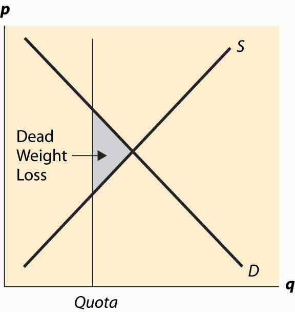

The final common way that governments intervene in market transactions is to impose a quota. A quotaA maximal production quantity, usually set based on historical production. is a maximal production quantity, usually set based on historical production. In tobacco, peanuts, hops, California oranges, and other products, producers have production quotas based on their historical production. Tobacco quotas were established in the 1930s, and today a tobacco farmer’s quota is a percentage of the 1930s level of production. The Secretary of Agriculture sets the percentage annually. Agricultural products are not the only products with quotas. The right to drive a taxi in New York requires a medallion issued by the city, and there are a limited number of medallions. This is a quota. Is it a restrictive quota? The current price of a New York taxi medallion—the right to drive a taxi legally in New York City—is $413,000 (as of 2008). This adds approximately $30,000 to $40,000 annually to the cost of operating a taxi in New York, using a risk-adjusted interest rate.
What are the effects of a quota? A quota restricts the quantity below what would otherwise prevail, forcing the price up, which is illustrated in Figure 5.11 "A quota". It works like a combination of a price floor and a prohibition on entry.
Generally, the immediate effects of a quota involve a transfer of money from buyers to sellers. The inefficient production and surplus of the price floor are avoided because a production limitation created the price increase. This transfer has an undesirable and somewhat insidious attribute. Because the right to produce is a capital good, it maintains a value, which must be captured by the producer. For example, an individual who buys a taxi medallion today, and pays $400,000, makes no economic profits—he captures the forgone interest on the medallion through higher prices but no more than that. The individuals who receive the windfall gain are those who were driving taxis and were grandfathered in to the system and issued free medallions. Those people who were driving taxis 70 years ago—and are mostly dead at this point—received a windfall gain from the establishment of the system. Future generations pay for the program, which provides no net benefits to the current generation. All the benefits were captured by people long since retired.
Figure 5.11 A quota
Does this mean that it is harmless to eliminate the medallion requirement? Unfortunately, not. The current medallion owners who, if they bought recently, paid a lot of money for their medallions would see the value of these investments destroyed. Thus, elimination of the program would harm current medallion owners.
If the right to produce is freely tradable, the producers will remain the efficient producers, and the taxi medallions are an example of this. Taxi medallions can be bought and sold. Moreover, a medallion confers the right to operate a taxi, but doesn’t require that the owner of the medallion actually drive the taxi. Thus, a “medallion owning company” can lease the right to drive a taxi to an efficient driver, thereby eliminating any inefficiency associated with the person who drives the taxi.
In contrast, because tobacco-farming rights aren’t legally tradable across county lines, tobacco is very inefficiently grown. The average size of a burley tobacco farm is less than 5 acres, so some are much smaller. There are tobacco farms in Florida and Missouri, which only exist because of the value of the quota—if they could trade their quota to a farm in North Carolina or Kentucky, which are much better suited to producing cigarette tobacco, it would pay to do so. In this case, the quota, which locked in production rights, also locked in production that gets progressively more inefficient as the years pass.
Quotas based on historical production have the problem that they don’t evolve in ways that production methods and technology do, thus tending to become progressively more inefficient. Tradable quotas eliminate this particular problem but continue to have the problem that future generations are harmed with no benefits.